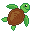

Guardião do Eco
Protetor da Natureza | Cadastrado em 2026
Progresso de Experiência
450 / 1000 XP

🐢 Mensagem do Tuga:
Você já concluiu 2 missões de preservação ambiental esta semana! Continue jogando para subir no Ranking e desbloquear o ODS 15!
Estatísticas da Jornada
14
Jogos Concluídos
85%
Acertos nos Quizzes
#12
Posição no Ranking Global
Insígnias & ODS Liberados
ODS 6: Água Potável
ODS 15: Vida Terrestre
ODS 13: Ação Climática
ODS 12: Consumo